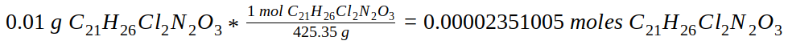

Sourcing PubChem, a credible source and the nation's library of medicine, the molecular weight (also known as molar mass) of cetirizine HCl is 425.35 grams per mole (g/mol). I took 10 mg, which was the amount of C21H26Cl2N2O3 in one tablet, and multiplied it by the molecular weight of ceterizine HCl. Since the conversion factor has grams, I converted 10 mg to grams by dividing 10 mg by 1000, since there are 1000 mg in a gram. The equation is as follows:
